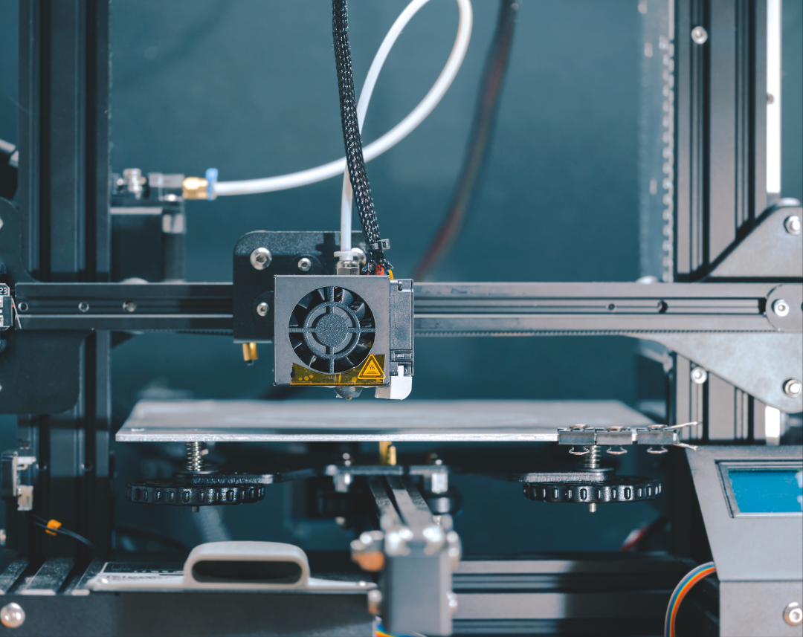

A Revolução da Internet das Coisas: Como a Conectividade Ubíqua está Transformando Nossas Casas e
Cidades
A Internet das Coisas (IoT) está desempenhando um papel transformador em nossas vidas, redefinindo a
maneira como interagimos com nossos ambientes, desde nossas casas até nossas cidades e além. Ao conectar
dispositivos e sistemas, a IoT possibilita a coleta, transmissão e análise de dados em tempo real,
proporcionando uma visão sem precedentes sobre o mundo ao nosso redor.
No contexto da automação residencial, a IoT está capacitando os proprietários a assumir o controle total
de seus ambientes domésticos, oferecendo conveniência e segurança sem precedentes. Através de
dispositivos inteligentes, como termostatos, câmeras de segurança, fechaduras eletromagnéticas e
eletrodomésticos conectados, os moradores podem monitorar e gerenciar suas casas remotamente, seja
através de aplicativos móveis intuitivos ou comandos de voz.
Além disso, a IoT está revolucionando o cenário urbano, impulsionando o conceito de cidades
inteligentes. Em ambientes urbanos, a IoT está sendo implementada para gerenciar infraestruturas
críticas, como sistemas de transporte público, iluminação pública, monitoramento de tráfego e
gerenciamento de resíduos. Sensores inteligentes e dispositivos conectados coletam e analisam dados em
tempo real, permitindo uma gestão mais eficiente dos recursos urbanos, redução de congestionamentos,
melhorias na segurança pública e otimização dos serviços municipais.
No entanto, o rápido crescimento da IoT também traz consigo desafios significativos, especialmente no
que diz respeito à segurança e privacidade dos dados. Com a proliferação de dispositivos conectados,
aumenta o risco de violações de segurança cibernética e ataques de hackers. Portanto, é imperativo que
sejam implementadas medidas robustas de proteção de dados e redes para mitigar essas ameaças e garantir
a integridade e confidencialidade das informações pessoais dos usuários.